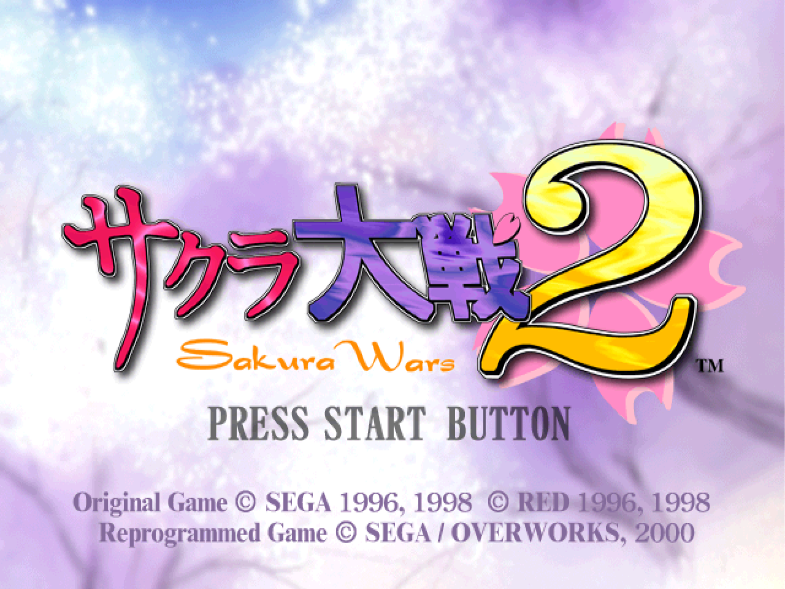
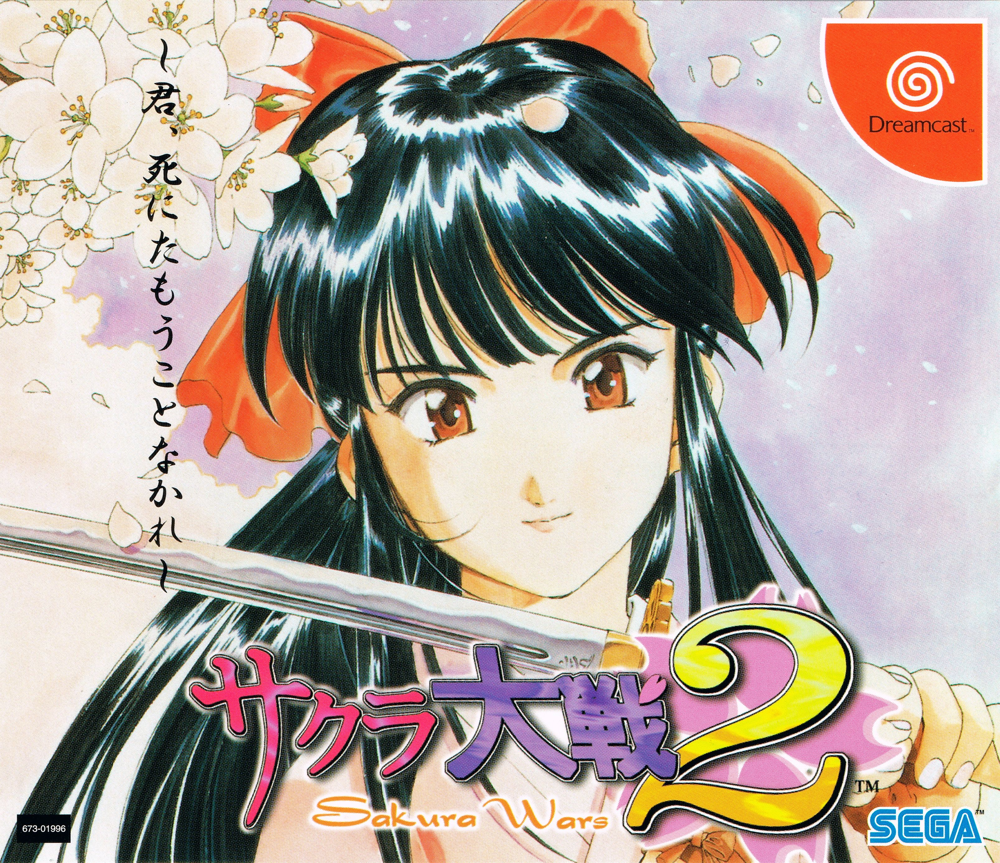

サクラ大戦2 〜君、死にたもうことなかれ〜
Set in 太正 year 14, this Dreamcast companion covers the full twelve-episode campaign at the 大帝国劇場. Follow exact LIPS prompts, キネマトロン calls, tactical battle formations, and all eight heroine endings without plot spoilers.
| Japanese Title | サクラ大戦2 〜君、死にたもうことなかれ〜 |
|---|---|
| Release & Media | Sega Dreamcast, September 21, 2000 across 3 GD-ROMs (Disc 1 covers Episodes 1 to 5, Disc 2 covers Episodes 6 to 10, Disc 3 covers Episodes 11 to 12) |
| Editions | Standard Edition, Limited Edition, and Memorial Pack (February 7, 2002) |
| Dreamcast Upgrades | Softdec animated movies, higher-resolution character portraits, ビジュアルメモリ defeat predictions and cooperative animations |
| Heroines & Cast | 8 花組 heroines including newcomers ソレッタ・織姫 and レニ・ミルヒシュトラーセ |
| Post-Game Extras | 帝都の長い一日 with 9 mini-games, combat simulator, memories, sound test, and movie replay |
Loading a cleared サクラ大戦 Dreamcast file from your ビジュアルメモリ unlocks every cleared heroine in 米田一基's prologue question, reveals a bonus 空き部屋 memory in Episode 1 Free Event A, and carries extra reminiscence scenes into Episodes 6 and 10.
The PSP compilation サクラ大戦1&2 omits cross-game save linking and ビジュアルメモリ animations, while adding fast-skip dialogue features absent on Dreamcast.


Section Hub & Progress Trackers
Beginner Tips
Save import perks, timed LIPS handling, trust versus morale, and battle survival basics.
Play Order & Endings
Ideal order across all eight heroines, Episode 8 and 9 save anchors, and Clear Data setup.
Game Mechanics
LIPS styles, personality gauge, Kinematron numbers, stances, Protect, and VMU readouts.
Missables
Chapter-locked events, Orihime and Reni trust windows, bromides, and secret Episode 13.
Episodes 1 to 12
Spoiler-safe step-by-step walkthrough across all three GD-ROM discs and tactical stages.
Heroines & Ogami
All eight Flower Division heroines, gauge preferences, Koubu roles, and Combined Attacks.
Bromides & Extras
Regular and Special Bromides, nine mini-games, combat drills, and Long Day gallery unlocks.
Credits & Sources
Full attribution for every Dreamcast walkthrough, Japanese攻略 wiki, and media source.